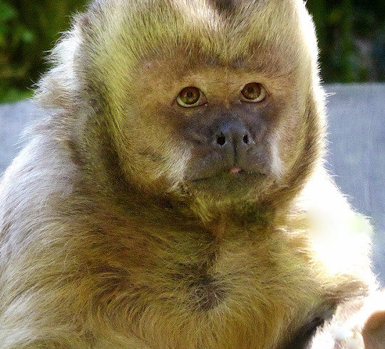
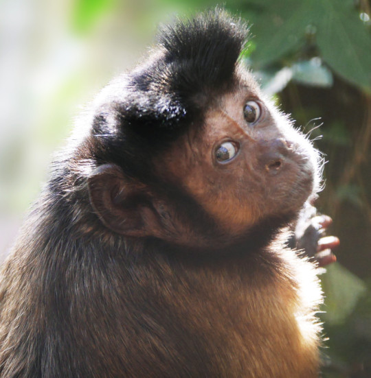
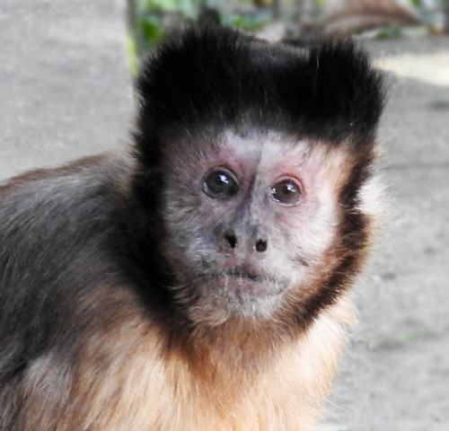
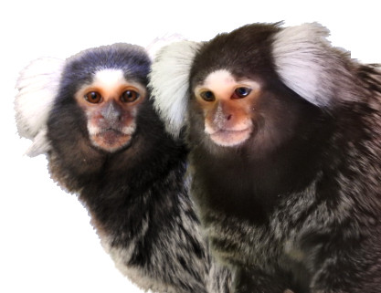
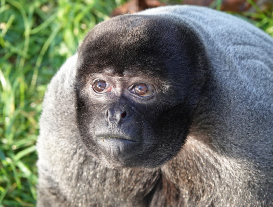
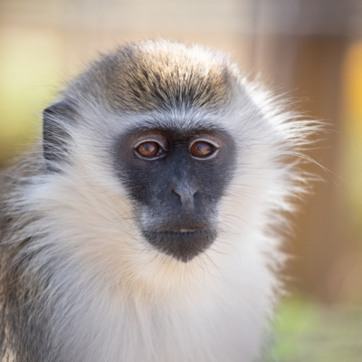
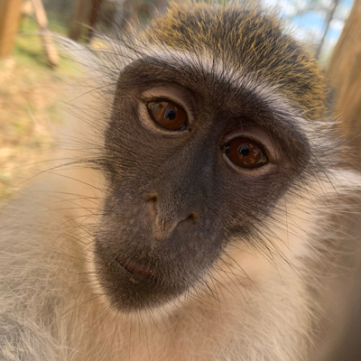
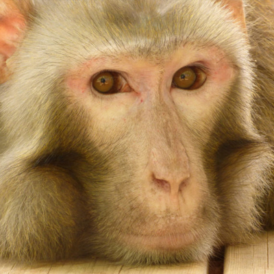
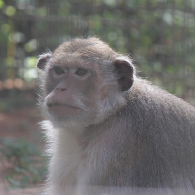

Wild Futures is a registered charity founded upon five decades of experience as a leader in the field of primate welfare and conservation, environmental education and sustainable practice. We are committed to protecting primates and habitats worldwide, with the protection of non-human primates at the forefront of our work. Our safe haven for monkeys rescued from situations of abuse and neglect is The Monkey Sanctuary in Cornwall, which has an international reputation for levels of care and innovative management techniques. We work closely with other organisations to lobby local and central government to bring about positive change for primates. We also support projects overseas with funding, practical assistance and advice and believe that education is vital in changing things for the better; educating more than 30,000 visitors and students on our work each year.
Monkeys

Billy, Black-capped Capuchin - The clumsy teenager

Boo Boo, Black-capped Capuchin - The Feisty Yet Fun One!

Betty, Black-capped Capuchin - The Quiet But Smart Capuchin

Finley and Freya, Common Marmosets - The Playful Brother and The Energetic Sister

Lily, Woolly Monkey - The playful, mischievous one
As a leading wildlife charity, we oppose the exploitation of wild animals in captivity and campaign to keep them where they belong – in the wild.
We promote Compassionate Conservation to enhance the survival of threatened species in the wild and protect natural habitats while respecting the needs and safeguarding the welfare of individual animals.
We seek to have a positive impact on animals in the wild and protect their ecosystems in perpetuity, for their own intrinsic value and for the critical roles they play within the natural world.
Monkeys

Kiki, Vervet - Miss Independent

Willis, African vervet - the Ball of Energy

Dawkins, Rhesus macaque - the Aloof Giant

Gizmo, Long-Tailed Macaque - the Expressive Greeter